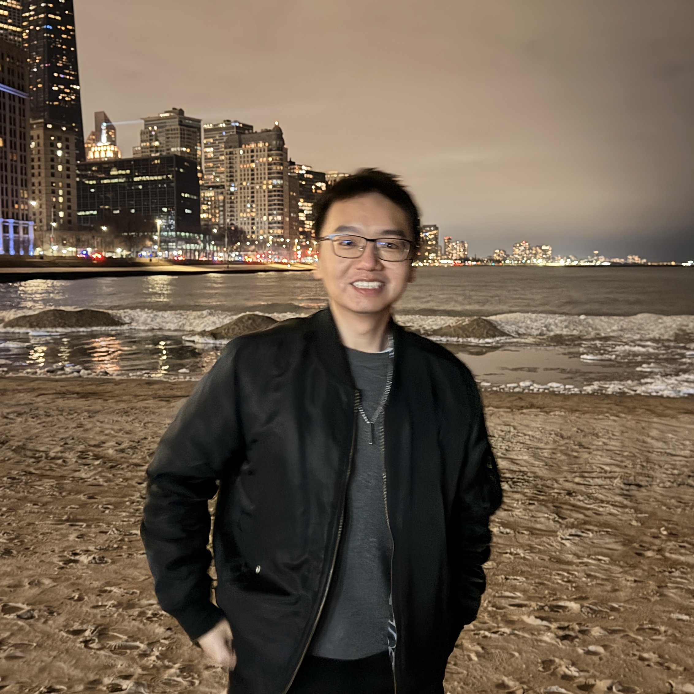

01
Constrained Learning
Optimization-aware learning methods that explicitly respect fairness, safety, physics, or operational constraints.
My work develops general learning and optimization methods and studies their use in transportation and other safety-critical systems.

My research asks a common question: how can we make learning systems more reliable when the data, constraints, or operating conditions are not ideal? I approach this through sensitivity analysis, constrained optimization, data influence, machine unlearning, robustness, privacy, and cybersecurity.
Transportation is a major application domain in my work because it combines large-scale data, physical constraints, safety requirements, and high-consequence decisions — making it a natural testbed for trustworthy AI.
Optimization-aware learning methods that explicitly respect fairness, safety, physics, or operational constraints.
Understanding how training-data perturbations propagate through constrained learning solutions and predictions.
Efficiently removing data influence, auditing vulnerability, and improving resilience to faulty or malicious data.
Applying trustworthy learning methods to traffic forecasting, infrastructure sensing, and intelligent transportation systems.